Aquí continúa la marcha sin concesiones. Este volumen recoge la segunda mitad del recorrido, profundizando en el pulso de la calle, la memoria erosionada y la aceptación de los días grises. Las imágenes y los versos continúan colisionando en ese territorio incómodo donde la única victoria posible es llegar enteros al final de la tarde.
Remeseiro mantiene el pulso de la abstracción urbana y doméstica, registrando el temblor exacto de la rutina y el descarte de lo que ya no sirve para continuar el viaje.
A veces la cabeza procesa
lo que viene
antes de que haya pruebas
encima de la mesa.
Son certezas
que no se pueden explicar con datos,
pero que están ahí.
Cuando la amenaza se instala
y el entorno aprieta,
el cuerpo reacciona.
Hablar solo
deja de ser una extrañeza
para convertirse en la respuesta inevitable
a lo que se ve venir.
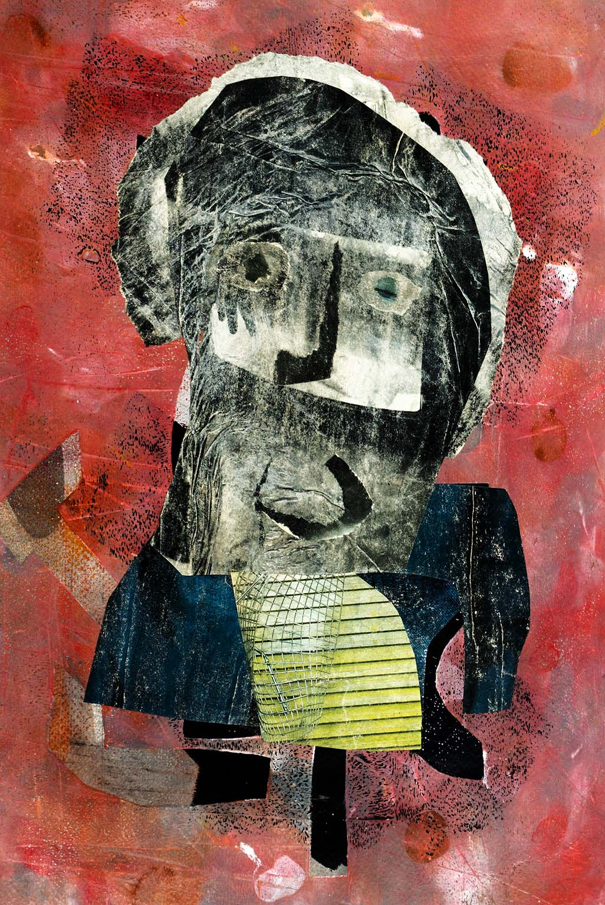
| TÍTULO DE LA OBRA | PROYECTO BULD · HABLAR SOLO |
| ESTRUCTURA | Obra poético-visual compuesta por texto y Fotografía de Abstracción Cromática |
| CAPTURA Y ÓPTICA | SONY ILCE-6000 (16-50 mm) |
| TÉCNICA FOTOGRÁFICA | Fotografía digital de abstracción por movimiento intencional de cámara y superposición cromática |
| SOPORTE & PAPEL | Impresión Giclée sobre papel de algodón de alta durabilidad |
| UBICACIÓN & AÑO | A Coruña, Galicia 2026 |
Subo, bajo.
Subo, bajo.
Subo, bajo.
Tiro de la cuerda.
Dos cartas de la baraja
pasan delante de mí:
la sota de espadas
y el caballo de oros.
Veo dos zapatos
en un paso de peatones.
En algún sitio de la casa
una fotografía me recuerda
que lo que quieres
lo tienes delante de ti.
Hoy me cambiaron el tratamiento;
siento menos temblor.
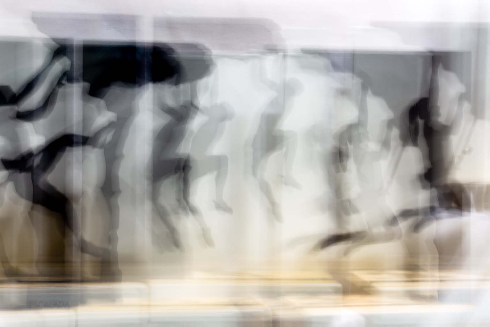
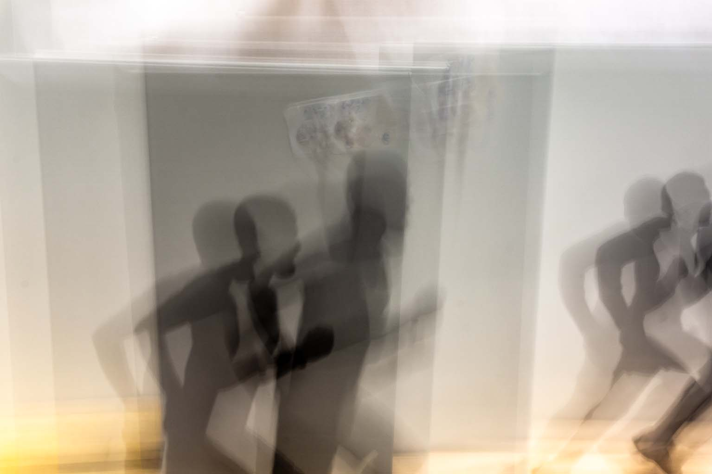
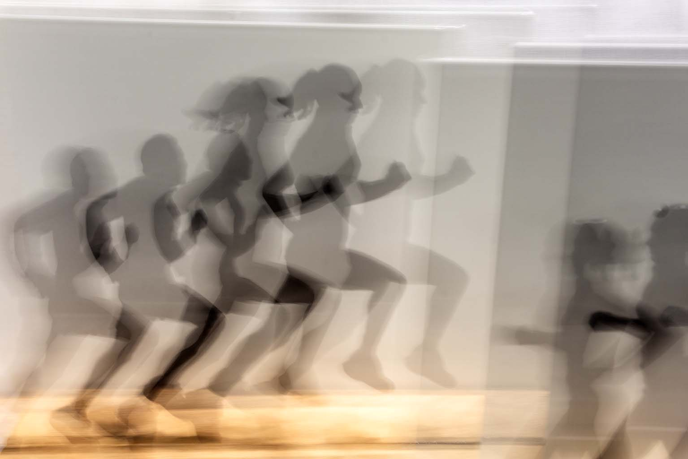
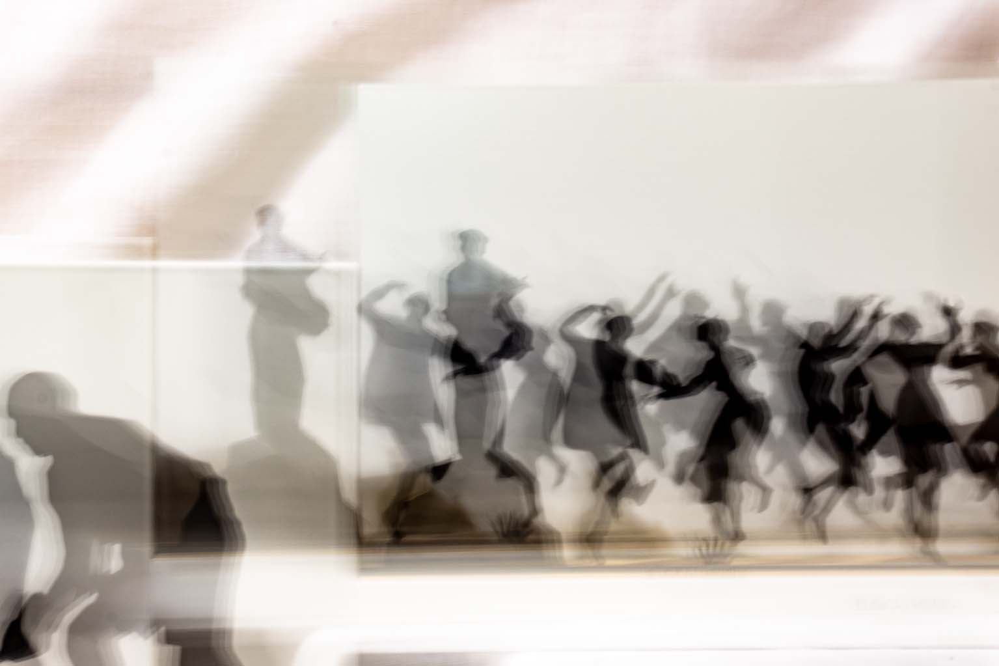
| TÍTULO DE LA SERIE | PROYECTO BULD · VILE I |
| ESTRUCTURA | Obra visual y poética articulada en 4 estrofas y 4 Fotografías de Abstracción Cromática |
| CAPTURA Y ÓPTICA | SONY ILCE-6000 (16-50 mm) |
| TÉCNICA FOTOGRÁFICA | Fotografía digital de abstracción por movimiento intencional de cámara y superposición cromática |
| SOPORTE & PAPEL | Impresión Giclée sobre papel de algodón de alta durabilidad |
| UBICACIÓN & AÑO | A Coruña, Galicia 2026 |
Tener razón,
aclaras las cosas,
no recuerdas nada más.
De una u otra manera,
¿no es así?,
de una vez por todas.
No deberías moverte,
te duele la espalda.
Las voces del combate
son distintas
a las voces interiores.
Por la mañana,
al abrir la puerta,
la calle sigue ahí.
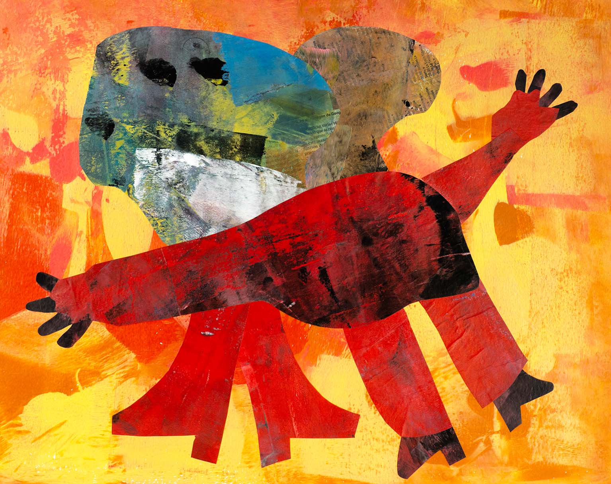
| TÍTULO DE LA OBRA | PROYECTO BULD · LA PELEA |
| ESTRUCTURA | Obra poético-visual compuesta por poema y Collage en Técnica Mixta |
| TÉCNICA ARTÍSTICA | Collage analógico, ensamblaje y pintura sobre soporte pictórico |
| SOPORTE & REPRODUCCIÓN | Impresión Giclée digital de alta resolución sobre papel de algodón de alta durabilidad |
| UBICACIÓN & AÑO | A Coruña, Galicia 2026 |
Se vislumbra la vejez,
sombra que desabrocha la camisa.
Me olvidé de decirle a mis ojos
que acudan cada noche a la cita con la piedra;
necesito que se pose una en cada ojo.
Oigo el pulso de los dedos de los pies
como olas en la orilla
y un ligero hormigueo.
Hago ruidos con la boca
con el mismo sonido que al pisar las hojas secas.
Dormido siento que al reloj
se le ha acabado la cuerda.
Dos pasos nada más.
La puerta está abierta.
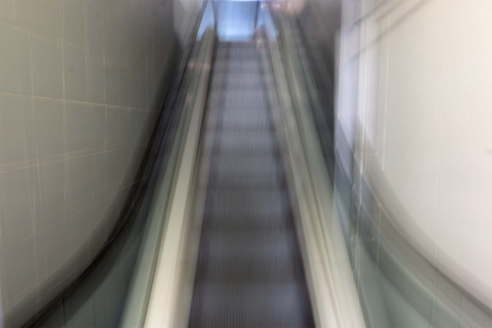
| TÍTULO DE LA OBRA | PROYECTO BULD · LA VEJEZ |
| ESTRUCTURA | Obra poético-visual compuesta por texto y Fotografía de Abstracción Cromática |
| CAPTURA Y ÓPTICA | SONY ILCE-6000 (16-50 mm) |
| TÉCNICA FOTOGRÁFICA | Fotografía digital de abstracción por movimiento intencional de cámara y superposición cromática |
| SOPORTE & PAPEL | Impresión Giclée sobre papel de algodón de alta durabilidad |
| UBICACIÓN & AÑO | A Coruña, Galicia 2026 |
El pan de cada día sabe a ceniza.
Lo amasan con la prisa de los martes
y se reparte a oscuras, sin receta.
No hay migas para nadie que no baje la cabeza.
Se come duro, áspero en la lengua,
recordando de dónde viene el hambre.
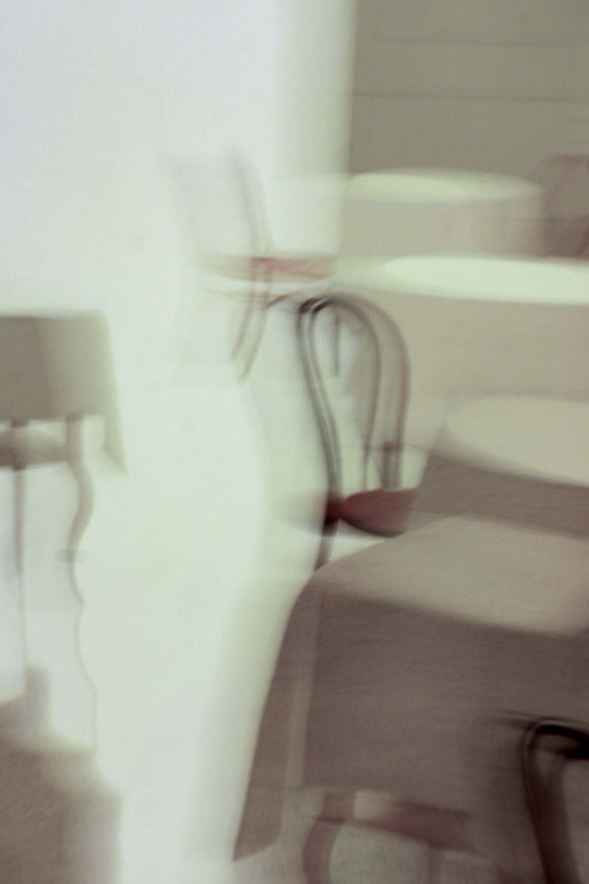
| TÍTULO DE LA OBRA | PROYECTO BULD · PAN NEGRO |
| ESTRUCTURA | Obra poético-visual compuesta por texto y Fotografía Documental Urbana |
| CAPTURA Y ÓPTICA | SONY ILCE-6000 (16-50 mm) |
| TÉCNICA FOTOGRÁFICA | Fotografía digital documental de aproximación y contraste de texturas |
| SOPORTE & PAPEL | Impresión Giclée sobre papel de algodón de alta durabilidad |
| UBICACIÓN & AÑO | A Coruña, Galicia 2026 |
Volver es una trampa de la memoria.
Las calles se han encogido,
las puertas ya no abren hacia dentro.
Buscas el rastro exacto de tus pasos
y solo encuentras sombras mudas
que no te reconocen al pasar.
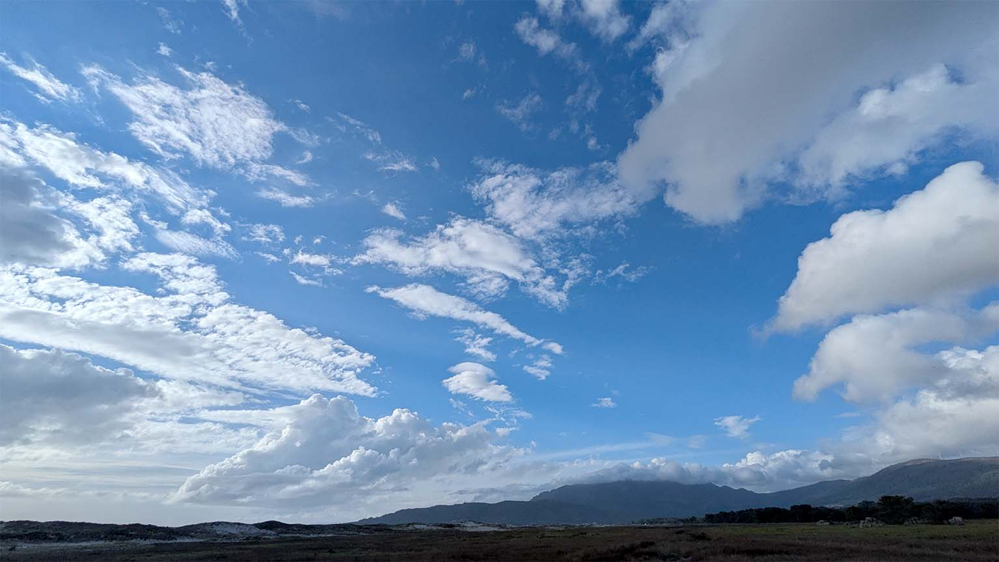
| TÍTULO DE LA OBRA | PROYECTO BULD · REGRESAR AL SITIO DE DONDE SALÍ |
| ESTRUCTURA | Obra poético-visual compuesta por texto y Fotografía de Abstracción Cromática |
| CAPTURA Y ÓPTICA | SONY ILCE-6000 (16-50 mm) |
| TÉCNICA FOTOGRÁFICA | Fotografía digital de abstracción por movimiento intencional de cámara |
| SOPORTE & PAPEL | Impresión Giclée sobre papel de algodón de alta durabilidad |
| UBICACIÓN & AÑO | A Coruña, Galicia 2026 |
No se trata de vencer ni de convencer a nadie.
Se trata tan solo de llegar enteros
al final de la tarde.
Cerrar la puerta con cerrojo,
quitarse los zapatos mojados
y comprobar que aún queda pulso en las manos.
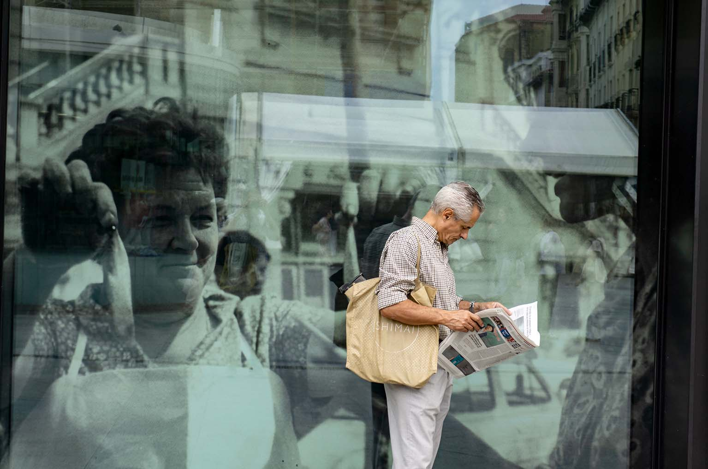
| TÍTULO DE LA OBRA | PROYECTO BULD · SUPERVIVENCIA |
| ESTRUCTURA | Obra poético-visual compuesta por texto y Fotografía Documental Urbana |
| CAPTURA Y ÓPTICA | SONY ILCE-6000 (16-50 mm) |
| TÉCNICA FOTOGRÁFICA | Fotografía digital documental de registro directo y luz ambiente |
| SOPORTE & PAPEL | Impresión Giclée sobre papel de algodón de alta durabilidad |
| UBICACIÓN & AÑO | A Coruña, Galicia 2026 |
La calle está mojada
y los coches pasan rápido,
salpicando agua en el bordillo.
Finales de octubre.
Al lado del contenedor,
justo en la raya blanca del paso de peatones,
alguien dejó un bulto.
Unos zapatos oscuros,
todavía con la forma de los pies de alguien,
metidos en una bolsa de plástico.
Tiene su aquél.
Da que pensar en las manos
—un poco avergonzadas, supongo—
que bajaron a la calle lloviendo
y no quisieron tirarlos al fondo de la basura.
Pensaron que al cuero todavía le quedaba vida
y los taparon del agua
con un plástico y un nudo apretado,
como quien abriga un trasto
para que no pase frío o se moje.
En ese envoltorio iban las mañanas de los lunes,
las citas que salieron torcidas,
las horas de oficina y el peso de una vida.
Y también la esperanza tonta
de que alguien los encuentre al pasar,
se los ponga y siga el camino.
Miro y sigo andando.
Llueve con mala leche.
Me da por pensar que hay más verdad
en ese plástico atado con pena
que en mis prisas por protegerme de la lluvia.
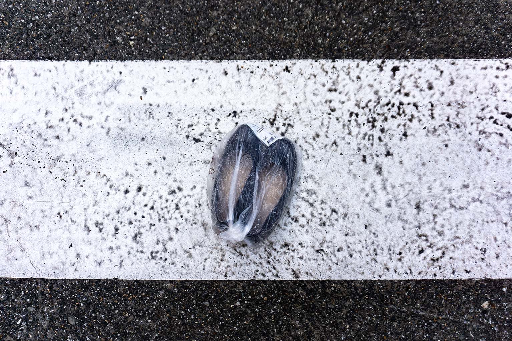
| TÍTULO DE LA OBRA | PROYECTO BULD · LAS MARCAS DEL VIAJE |
| ESTRUCTURA | Obra poético-visual compuesta por poema y Fotografía Documental Urbana |
| CAPTURA Y ÓPTICA | SONY ILCE-6000 (16-50 mm) |
| TÉCNICA FOTOGRÁFICA | Fotografía digital documental de plano cenital y contraste de texturas urbanas |
| SOPORTE & PAPEL | Impresión Giclée sobre papel de algodón de alta durabilidad |
| UBICACIÓN & AÑO | A Coruña, Galicia 2026 |